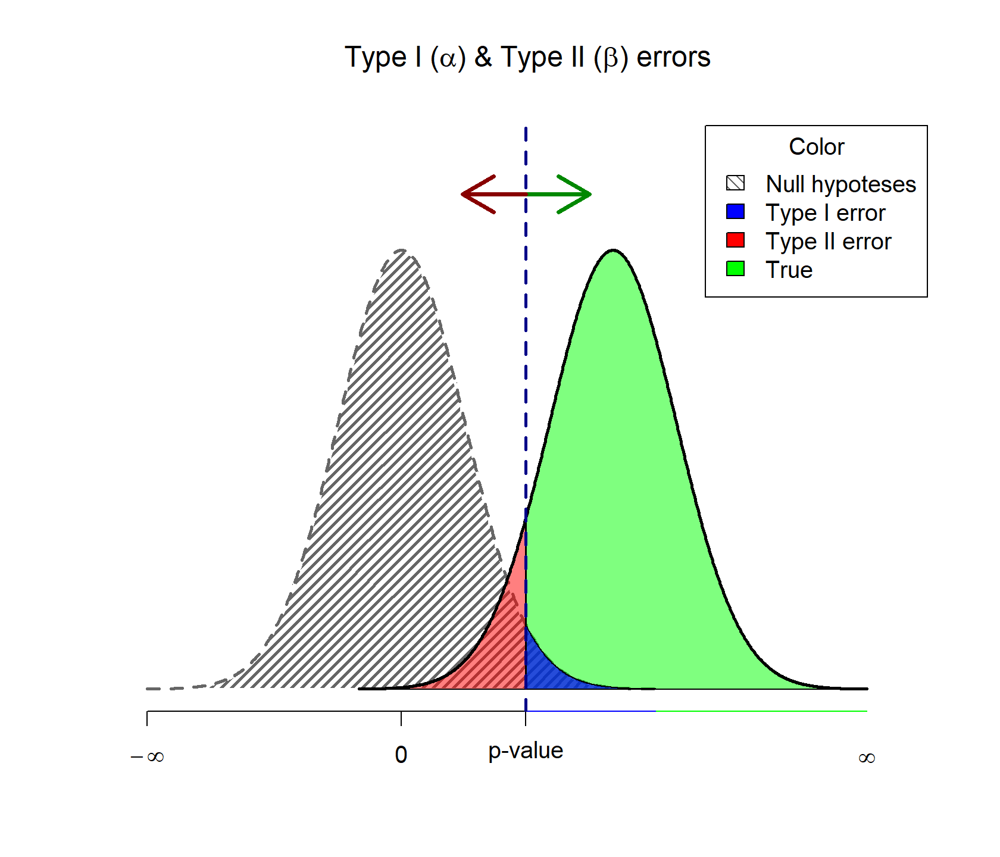
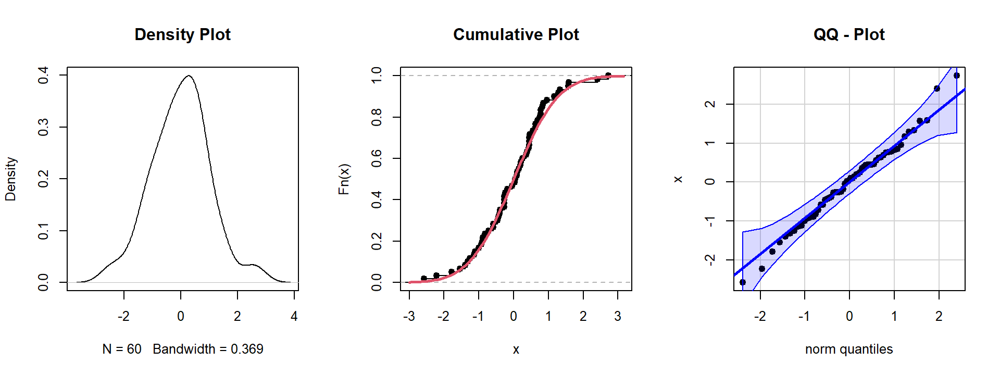
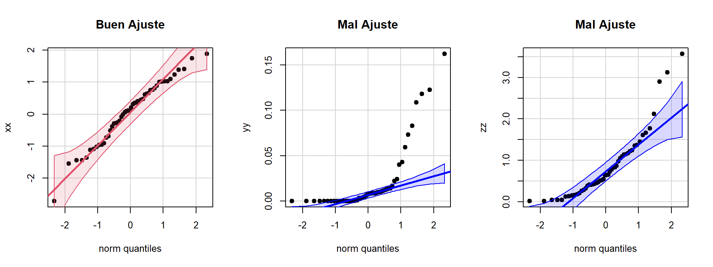

Una hipótesis Estadística es una afirmación que se hace con respecto a una o algunas características desconocidas de una población de interés o acerca de la misma población.
Una afirmación hecha acerca de una población o de una de sus características de interés, tiene sentido solo si es evaluada con base en la información obtenida a partir de una muestra aleatoria de dicha población.
Como dicha afirmación puede ser o no cierta, dos hipótesis (antagónicas) pueden ser planteadas:
\[H_0:\text{La hipótesis es cierta vs}\quad H_a:\text{La hipótesis es falsa}\] \(H_0\) y \(H_a\) se conocen como hipótesis nula y alternativa respectivamente. \(H_0\) se rechaza, solo si la evidencia muestral apoya fuertemente esa decisión. En otro caso diremos que la evidencia muestral no es suficiente para rechazar \(H_0\) y se asume \(H_a\) como cierta. El proceso por medio del cual escogemos una de las dos hipótesis es llamado Prueba de Hipótesis.
Para rechazar o aceptar una hipótesis necesitamos a parir de la muestra aleatoria construir un estadístico de prueba tal que, comparado con valor crítico calcula con un nivel de significancia, otorgue la suficiente evidencia para sacar una conclusión. El contraste de la hipótesis nula determina las posibles regiones de rechazo donde será comparado el estadístico de prueba.
\[1:\,\{x\,|\,x > |k|\}\\2:\,\{x\,|\,x < -k\}\\3:\,\{x\,|\,x > k\}\]
Así toda prueba de hipótesis consta de:
En general, sea un parámetro de interés desconocido \(\theta\) y un valor particular \(\theta_0\). Es posible plantear una de tres hipótesis alternativas:
\[\begin{align*} H_0: \theta=\theta_0 \quad \text{vs} \quad H_a: \begin{cases} \theta &\neq\theta_0 \\ \theta &< \theta_0 \\ \theta &> \theta_0 \\ \end{cases} \end{align*}\]
Existe un estadístico \(\hat\theta\) estimado a partir de la muestra aleatoria, el cual sirve para contrastar la hipótesis construyendo las posibles regiones de rechazo (de acuerdo a \(H_a\)) con un nivel de significancia \(\alpha\) dado.
\[\{\hat\theta\,|\,\hat\theta > |k|\}\quad \{\hat\theta\,|\,\hat\theta < k\}\quad \{\hat\theta\,|\,\hat\theta > k\}\]
Otra forma de contrastar la hipótesis es calcular el valor mínimo de \(\alpha\), es decir la probabilidad de rechazar la hipótesis nula. A este cálculo se le conoce como el valor-p de la prueba:
\[P(|\hat\theta| > |k|)\quad P(\hat\theta < k)\quad P(\hat\theta > k)\]
La decisión de aceptar o rechazar una hipótesis se basa en una muestra aleatoria \(X_1,X_2,...,X_n\) de la distribución de \(X\), por tanto la decisión podría ser equivocada. Los errores que se pueden cometer son:
Aceptar \(H_0\) siendo falsa.
Rechazar \(H_0\) siendo verdadera.
| Decisión | \(H_0\) es Verdadera | \(H_0\) es Falsa |
|---|---|---|
| Rechazar \(H_0\) | Error Tipo I | Decisión Correcta |
| Aceptar \(H_0\) | Decisión Correcta | Error Tipo II |
Es lógico que se desea minimizar las probabilidades de cometer los errores en la decisión (tipo 1 ó 2), pero esto depende de la m.a \(X_1,X_2,...,X_n\). Sin embargo, si P(cometer error tipo 1)=0, entonces P(cometer error tipo 2)=1.
\[\alpha = P(\text{Error Tipo I})\] \[\beta = P(\text{Error Tipo II})\] \(\alpha\) es llamado nivel de significancia de la prueba o tamaño de la región crítica y \(1-\beta\) es la potencia de la prueba.

Suponga que \(X\) es una v.a tal que \(X \sim bin(n , p)\), con \(p\) desconocida. Sea \(p_0\) un valor de interés para \(p\). Tres hipótesis pueden ser planteadas acerca de \(p\).
\[\begin{align*} H_0: p=p_0 \quad \text{vs} \quad H_a: \begin{cases} p &<p_0 \\ p &> p_0 \\ p &\neq p_0 \\ \end{cases} \end{align*}\]
Por el TCL sabemos que si \(n\) es grande entonces:
\[\cfrac{\hat{p}-p_0}{\sqrt{\frac{p_0(1-p_0)}{n}}} \stackrel{aprox}{\underset{n \rightarrow \infty}{\widetilde{\quad\quad}}} N(0,1)\]
Entonces el estadístico de prueba a ser usado es:
\[Z_c=\cfrac{\hat{p}-p_0}{\sqrt{\frac{p_0(1-p_0)}{n}}}\]
Para un \(\alpha\) dado, la Región Crítica es de la forma:
\[\begin{align*} R.C: \begin{cases} Z_c &\rightarrow\, Z_c <z_\alpha \\ Z_c &\rightarrow\, Z_c >z_{1-\alpha} \\ Z_c &\rightarrow\, |Z_c| >z_{1-\alpha/2} \\ \end{cases} \qquad V_p: \begin{cases} P(Z < Z_c) \\ P(Z > Z_c) \\ P(|Z| > |Z_c|) \\ \end{cases} \end{align*}\]
En una muestra de 85 recién nacidos, 10 presentaron riesgo de desnutrición. ¿Cuál es la proporción real de recién nacidos con riesgo de desnutrición con una confianza del 95%? Las secretaría de sañud sabe que si el porcentaje de recién nacidos en riesgo de desnutrición supera el 10% deberá generar una alerta al Ministerio de Saludo para hacer un plan de contingencia. Con un nivel de significancia del 5% ¿es necesario generar la alerta?
Tenemos las siguientes hipótesis \[H_0: p=0.1 \quad\text{vs}\quad H_a: p>0.1\] Entonces con el estadístico de prueba se puede estimar la región crítica: \[Z_c=\frac{10/85-0.1}{\sqrt{\frac{0.1 \times 0.9}{85}}}=0.542326\] Si \(\alpha =0.05\) entonces se tiene que \(Z_{0.95}=1.645\) y así la región de rechazo es de la forma: \[RC=\{Z_c\,|\,Z_c>Z_{0.95}\}=\{Z_c\,|\,0.542326>1.645\}\] Y en términos del valor-p se calcula: \[P(Z>Z_c)=P(Z>0.542326)=1-P(Z<0.542326)=0.2938\] Como \(ZC\ngtr 1.645\) o \(0.2938 > 0.05\), entonces no existe suficiente evidencia muestral que soporte la creación de la alerta al Ministerio de Salud, por lo tanto no se rechaza \(H_0\).
Gracias al impacto de las redes sociales y la desinformación de influencers que se declaran expertos en nutrición, calidad de vida y salud, se piensa que la cantidad de bebés que no reciben leche materna ha disminuído significativamente, principalmente en los estratos Altos. Se sabe que la prevalencia de lactancia materna en esta población hace 5 años es del 75%. Neonatólogos del San Vicente realizaron una investigación en 254 bebés, de los cuales 171 reciben lactancia materna. Con un nivel de confianza del 95% ¿La hipótesis de los neonatólogos es cierta?
Tenemos las siguientes hipótesis \[H_0: p=0.75 \quad\text{vs}\quad H_a: p<0.75\] Entonces con el estadístico de prueba se puede estimar la región crítica: \[Z_c=\frac{171/254-0.75}{\sqrt{\frac{0.75 \times 0.25}{254}}}=-2.825642\] Si \(\alpha =0.05\) entonces se tiene que \(Z_{0.05}=-1.645\) y así la región de rechazo es de la forma: \[RC=\{Z_c\,|\,Z_c<Z_{0.05}\}=\{Z_c\,|\,-2.825642<-1.645\}\] Y en términos del valor-p se calcula: \[P(Z>Z_c)=P(Z<-2.825642)=1-P(Z<2.825642)=0.002359299\] Como \(ZC< -1.645\) o \(0.002359 < 0.05\), entonces se reachaza la hipótesis nula \(H_0\), por lo tanto, existe suficiente evidencia muestral que soporta la disminución estadísticamente significativa de la lactancia materna.
Sea \(X_1,\dots,X_n\) una muestra aleatoria de una población con media \(\mu\) y varianza \(\sigma^2\) si se tienen una muestra grande, entonces para un valor \(\mu_0\) de interés para \(\mu\) se pueden plantear uno de los siguientes contrastes de hipótesis.
\[\begin{align*} H_0: \mu=\mu_0 \quad \text{vs} \quad H_a: \begin{cases} \mu &<\mu_0 \\ \mu &> \mu \\ \mu &\neq \mu_0 \\ \end{cases} \end{align*}\]
El Estadístico de Prueba está dado por:
\[Zc=\cfrac{\bar{X}-\mu_0}{\frac{\sigma}{\sqrt{n}}}\]
Si \(\sigma^2\) es desconocida se puede reemplazar por \(S^2\). Para un \(\alpha\) dado, la Región Crítica es de la forma:
\[\begin{align*} R.C: \begin{cases} Z_c &\rightarrow\, Z_c <z_\alpha \\ Z_c &\rightarrow\, Z_c >z_{1-\alpha} \\ Z_c &\rightarrow\, |Z_c| >z_{1-\alpha/2} \\ \end{cases} \qquad V_p: \begin{cases} P(Z < Z_c) \\ P(Z > Z_c) \\ P(|Z| > |Z_c|) \\ \end{cases} \end{align*}\]
Una Nutricionista de una clínica es la encargada de los planes de ganancia de peso en embarazadas. De acuerdo a los parámetros se sabe que la variación de la ganancia de peso al final de la gestación es de 5 kilos. Se tiene la hipótesis que en los últimos años las gestantes están ganando más de lo recomendado y por lo tanto nacen bebés macrosómicos. Se escogen al azar 45 embarazadas adultas con IMC normal y se registra sus ganancias de peso al final de la gestación y la ganancia promedio resultó en 17.3 kg. Con un nivel de significancia del 5% ¿La hipótesis es verdadera?
De a cuerdo con el Instituto de Medicina y Consejo Nacional de Investigación, la ganancia de peso máxima para gestantes en normo peso es de 16 kilos, entonces las pruebas de hipótesis son: \[H_0: \mu=16 \quad\text{vs}\quad H_a: \mu>16\] Del enunciado tenemos que \(E[X_i]=17.3\) y como \(\sigma=5\), así el estadístico de prueba está dado por: \[Z_c=\cfrac{\bar{X}-16}{\frac{5}{\sqrt{45}}}=\cfrac{17.3-16}{\frac{5}{\sqrt{45}}}=1.744133\] Como \(\alpha=0.05\) se tiene que \(Z_{0.95}=1.645\), entonces la región de rechazo es de la forma: \[RC=\{Z_c\,|\,Z_c>Z_{0.95}\}=\{Z_c\,|\,1.744133>1.645\}\] Y en términos del valor-p se calcula: \[P(Z>Z_c)=P(Z>1.744133)=1-P(Z<1.744133)=0.04056795\] Como \(Z_c>1.645\) o \(0.0406<0.05\) entonces se rechaza \(H_0\), por lo tanto existe evidencia muestral suficiente que en los últimos años las gestantes están ganando más de lo recomendado con un nivel de significancia del 5%.
En procesos de investigación no es común hacer procesos de muestreo o experimentación, que involucren una gran cantidad de datos, y para realizar pruebas de hipótesis en estas circunstancias es necesario comprobar si los datos provienen de una distribución normal o no.
Si el interés es realizar inferencias sobre la diferencia promedio de dos grupos entonces es necesario verificar que las muestras aleatorias de ambos grupos distribuyan apróximadamente normal. Este procedimiento se realiza con una prueba de hipótesis llamada prueba de bondad de ajuste en este caso para la normal.
\[H_0:\text{los datos SI destribuyen }N(\mu,\sigma^2)\\ \text{vs}\\ H_0:\text{los datos NO destribuyen }N(\mu,\sigma^2)\\\]
Para determinar si un conjunto de datos tiene una distribución conocida, se pueden realizar análisis exploratorios con algunos gráficos que ayudan a apreciar de manera aproximada cómo podrían distribuir los datos.

Estos tres gráficos nos ayudarán para explorar el comportamiento de los datos y se pueden combinar con los gráficos de las distribuciones teóricas para evaluar qué tanto se parecen.
El primer gráfico se llama Gráfico de Densidad, muestra cómo es la distribución empírica de probabilidad, a diferencia del Histograma es una buena aproximación de las distribuciones continuas.
El segundo gráfico se llama Gráfico Densidad Acumulada Empírica, este gráfico es muy útil cuando se compara con La densidad acumulada de las distribuciones teóricas. Además, el gráfico muestra el salto de cada muestra en la función de densidad acumulada empírica.
El tercer gráfico se llama Gráfico de Comparación de Cuantiles, contrasta las muestras con los cuantiles de la distribución teórica. La ventaja de este gráfico es que dibuja una recta en la cual se espera que el conjunto de datos se ajuste, además dibuja bandas de confianza para mostrar hasta dónde se puede considerar que los puntos se ajustan a la recta.

La idea de este gráfico es que los puntos estén muy cercanos a la recta y entre los límites de confianza. Hay que tener cuidado en los extremos de las muestras, ya que algunos puntos pueden salir de las bandas pero esto no significa que no tengan la distribución que se está evaluando; si la mayoría de los puntos están ajustados a la recta y son muy pocos datos en los extremos que salen de las bandas, se puede considerar un buen ajuste.
Existen muchas pruebas de bondad de ajuste para la normalidad, no obstante, las más utilizadas y referenciadas en la literatua son:
Las pruebas de hipótesis para la media basadas en poblaciones normales asume que la muestra aleatoria \(X_1,\dots,X_n\) proviene de una \(N(\mu,\sigma^2)\) con ambos parámetros desconocidos, sabemos por el teorema central del límite que:
\[\cfrac{\bar{X}-\mu}{\frac{S}{\sqrt{n}}} \sim t_{n-1}\]
Así, si \(\mu_0\) es un valor particular de \(\mu\), se pueden plantear una de las siguientes tres hipótesis:
\[\begin{align*} H_0: \mu=\mu_0 \quad \text{vs} \quad H_a: \begin{cases} \mu &<\mu_0 \\ \mu &> \mu \\ \mu &\neq \mu_0 \\ \end{cases} \end{align*}\]
El Estadístico de Prueba está dado por:
\[Tc=\cfrac{\bar{X}-\mu_0}{\frac{S}{\sqrt{n}}}\]
Para un \(\alpha\) dado, la Región Crítica es de la forma:
\[\begin{align*} R.C: \begin{cases} T_c &\rightarrow\, T_c <t_{(\alpha,\,n-1)} \\ T_c &\rightarrow\, T_c >t_{(1-\alpha,\,n-1)} \\ T_c &\rightarrow\, |T_c| >t_{(1-\alpha/2,\,n-1)} \\ \end{cases} \qquad V_p: \begin{cases} P(t_{n-1} < T_c) \\ P(t_{n-1} > T_c) \\ P(|t_{n-1}| > |T_c|) \\ \end{cases} \end{align*}\]
De acuerdo con estudios sobre la fuerza prensil manual en adultos mayores que la fuerza de prensión se distribuye normalmente. Se sabe que la fuerza prensil está asociada con riesgos cardiovasculares, y de la literatura se supone que los valores menores a 16 kgf en esta población infiere riesgos a la salud. Se toma una muestra aleatoria de 16 adultos mayores y se obtiene un fuerza de prensión promedio para la mano débil de 15.63 kgf con una desviación estándar de 2.18 kgf. Con un nivel de siginificancia del 3% ¿Esta población estaría en riesgo?
Las pruebas de hipótesis son: \[H_0: \mu=16 \quad\text{vs}\quad H_a: \mu<16\] Del enunciado tenemos que \(E[X_i]=15.63\) y \(S=2.18\), así el estadístico de prueba está dado por: \[T_c=\cfrac{\bar{X}-16}{\frac{2.18}{\sqrt{16}}}=\cfrac{15.63-16}{\frac{2.18}{\sqrt{16}}}=-0.6788991\] Como \(\alpha=0.03\) se tiene que \(t_{(0.03,15)}=-2.034289\), entonces la región de rechazo es de la forma: \[RC=\{T_c\,|\,T_c<t_{(0.02,15)}\}=\{T_c\,|\,-0.6788991<-2.034289\}\] Y en términos del valor-p se calcula: \[P(T>T_c)=P(T<-0.6788991)=1-P(T<0.6788991)=0.7462289\] Como \(T_c\nless-2.034\) o \(0.7462\nless0.03\) entonces no se rechaza \(H_0\), por lo tanto no existe evidencia muestral suficiente para suponer que la población tienen riegos cardiovasculares basados en la fuerza prensil con un nivel de significancia del 5%.